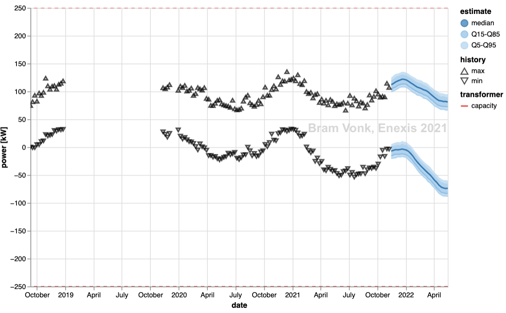
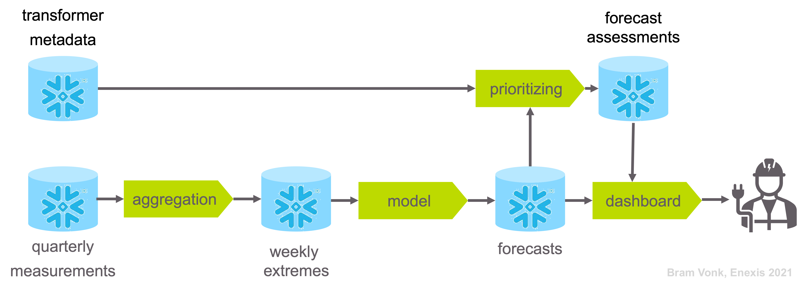
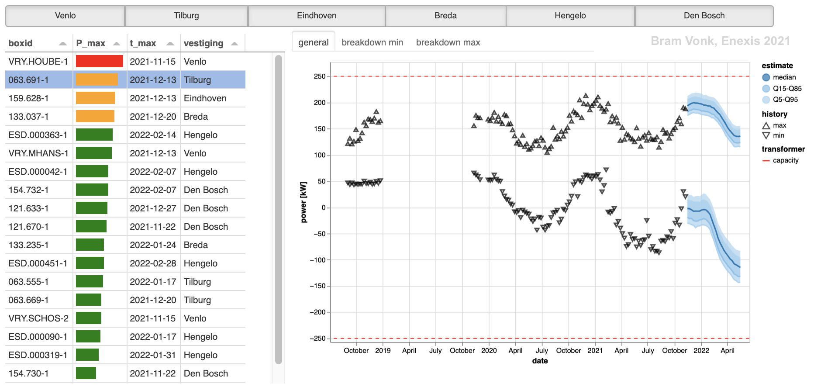
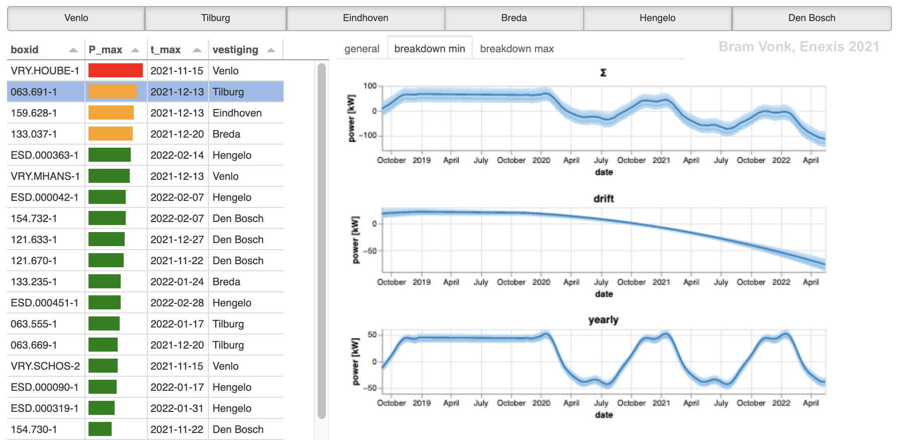

This section discusses the evaluation of the implemented model, the assessments of results and a reflection on the learning objectives for the study course this project was part of.
The evaluation of results has not been done with a error criteria (e.g. MAE, MAPE), but only visual. This will be done in the near future, when additional model improvements are implemented and needed to be assessed.
This section will discuss briefly the model
The model as it is described before is stable for all transformer forecasts: It converges for all transformer timeseries that are used.
A robust model for all 11k transformers is essential if models are trained and used without human supervision and results are automatically assessed. An experiment of an exponential function for the drift sub-model was implemented, but far from stable.
The model is also robust when data is missing. Even missing data for long periods will result is a reasonable forecast:

The model results after data accidentally was removed from the source database.
The model forecasts neatly the median and quantile bands as intended.
However, it will always be a model trained on historical, observed data, and forecasts will always be off. Partially, this can be due to model imperfections, for which improvements are suggested earlier, partially this is due to the reality opf the outside world.
The grid planners were shown different off-results to make them aware of the limiting accuracy and reliability of the models and their forecasts.
This was visually shown by the following actions: The results were assessed by splitting the observed data into a train and test set, using a model based on the train set and comparing the results with the test set. The performance of for the different transformers of course also differs, but an example can be seen in the following figure:
Forecasts made by a model based on data before May 2021, validated with later observation.
Stepping through the CRISP-DM cycle resulted in several insights to for model improvement. The most promising suggestions for model improvement are:
Improving tuning and forecasting time.
Implementing hybrid additive-multiplicative model for dealing with the growing seasonality.
Adding a extra component to detect temporarily bypass switching of loads of other transformers.
Making more recent observations more relevant for slowly changing loading patterns
Using the population seasonality as a prior in case of a short history of observations.
Using by-pass dummy model for outlier robustness.
This section discusses the assessment and prioritization of the forecasts and the implementation within the process.
The are potentially 11k models that all forecast six months ahead.
These are numbers too high to be assessed by grid planners one by one. Therefore the forecast results are automatically assessed and ordered by urgency.
The grid planners gave as input that they wanted overloaded transformers ordered by the time the potential overloading was expected.
Firstly, the definition of potential (over)loading was agreed on to be the following:
Potential loading is the maximum absolute of the forecast quantile bands divided by the transformer capacity
Potential overloading is the potential loading is greater than one.
Potential overloaded transformers can now be ordered by the point in time when they reach this limit.
Then there are also transformers that will never potentially overload. The forecasts of these transformers are simply ordered by potential loading
To summarize into steps:
Determine absolute value of the forecasted quantile bands.
Divide the found value by the transformer capacity.
Clip the results on the value of one.
Find value and index (timestamp) of the maximum.
Order the transformers by timestamp (first) and value (second).
The result of this prioritization is shown below.
Transformers ordered by potential (over)loading.
The result is that grid planners have an prioritized list of transformers, with on top the transformers that are probably overloading soon.
The assessments of the forecasts which results in the ordered list (src.forecast.assess.asses_forecasts()) is done directly after forecasting.
src.forecast.assess.asses_forecasts()

The process steps of the final product.
The result is stored separately in a Snowflake database table (src.utils.snowflake.read_forecast_meta()). This way the data can quickly be loaded by the dashboard application and presented to the grid planners.
src.utils.snowflake.read_forecast_meta()
A dashboard is made by using Panel and Altair libraries (src.plot.dashboard). The dashboard presents the ordered list of all transformers and a figure of a forecast for an individual transformer.
src.plot.dashboard

The dashboard with on the left the ordered transformers and on the right the tabs with forecast and decomposed trend and yearly pattern for minimum and maximum.
The list can be filtered by Enexis sub-service area, since grid planners are generally responsible for an area within these areas and not interested in the whole service area. Other ordering is possible if the grid planner desires.
After selection of a transformer, the measured weekly extremes, the forecast six months ahead, and the transformer capacity are displayed in the first tab. One can zoom in and pan de plot and tooltips show up on historic measurement data. If the grid planner is interested, he can view in the other tabs the decompositions (drift / trend and yearly pattern) for the weekly minimum and maximum.

The dashboard with the sub-service area filtering and the minimum decomposition tab of the dashboard.
Firstly, the loading of individual forecasts requires some improvement. At this moment the data loading is slow due to an interface issue between python and the Snowflake database. This issue has the highest priority, since grid planners do not want to wait for results.
Secondly, The current dashboard needs to be deployed within the Enexis landscape.
Additionally, some aesthetic improvements are welcome, since the presentation is quiet basic at this moment.
This section covers my personal growth reflection on the Lead track of JADS. Firstly, I will cover the objectives and criteria set by JADS. Secondly, I will review my personal goals.
The general learning objectives for the Professional Education Lead track of JADS are:
The most valuable courses were the non-technical ones. Partially, because there was maybe more to gain for me as a more technical character. But mainly, since they inspired me and enabled me to accept to embrace that skill set and also provided me with concrete tips to put it into practice.
Some technical lectures (e.g. “from POCs to Production” and “A Primer in Data Engineering”) confirmed that the way of working and view on data science within my professional team is on the right track. Other technical courses (e.g. “Bayesian Nets”, “Recent Advances in A.I.”) inspired me and sparked an interest in new subjects. Those subjects are now on my personal bucket list for a technical deep dive in the near future.
The Conscious Competence Learning Model (source: pamelaslim.com).
The described project of this documentation shows the result of that.
The coaching from the educators of JADS helped me reassess my future career.
The discussions with Jeroen about academic and engineering skills helped me appreciating my skills, my work and myself more.
The coaching of Kyril helped me to form a clearer view on my career goal and how to get there.
The highly effective presentation masterclass of Raoul helped me to reach goals more effective.
The evaluation criteria for the Professional Education Lead track of JADS and how I translated them are:
Business Value
Use case selection Stakeholder analysis Stakeholder and expectation management Value flow down diagram Regular business review moments
Use case selection
Stakeholder analysis
Stakeholder and expectation management
Value flow down diagram
Regular business review moments
Programming
Coding standards with Cookiecutter and linting (black, isort, flake8) Using Sphinx for auto API documentation in GitHub Interactive visualisations in Altair Dashboard in Panel
Coding standards with Cookiecutter and linting (black, isort, flake8)
Using Sphinx for auto API documentation in GitHub
Interactive visualisations in Altair
Dashboard in Panel
Data engineering
Snowflake database preprocessing usage (asynchronous queries, ETL) Vault credential management Docker (compose with entrypoint) for every process step
Snowflake database preprocessing usage (asynchronous queries, ETL)
Vault credential management
Docker (compose with entrypoint) for every process step
Data analytics & machine learning
Coding data management and model from scratch (since not using sklearn) Probabilistic modelling in PyMC3 Using Fourier and Taylor series in generalized additive model for time series forecast
Coding data management and model from scratch (since not using sklearn)
Probabilistic modelling in PyMC3
Using Fourier and Taylor series in generalized additive model for time series forecast
Professional standard of reporting
Using Sphinx for this documentation Status slide deck after sprint review with end users Project status / pitch and management summary for JADS peers and training
Using Sphinx for this documentation
Status slide deck after sprint review with end users
Project status / pitch and management summary for JADS peers and training
Academic / research skills
Using the engineering approach (instead of the scientific method or the axiomatic system) to iteratively create and validate model and outcome.
Additionally, there were also my personal learning objectives:
Going through all the steps of CRISP-DM by myself (from Business Understanding to Deployment).
Better understanding of probabilistic modeling techniques (e.g. bayesian models, probabilistic tools).
Able to value my data skills and knowledge and creating traction / more confidence on flourishing as a data scientist.
One by one my personal learning objectives are fulfilled.
However, my conscious incompetence skill set has grown dramatically. So my new learning objectives are already there. (I will just have to order that backlog.)